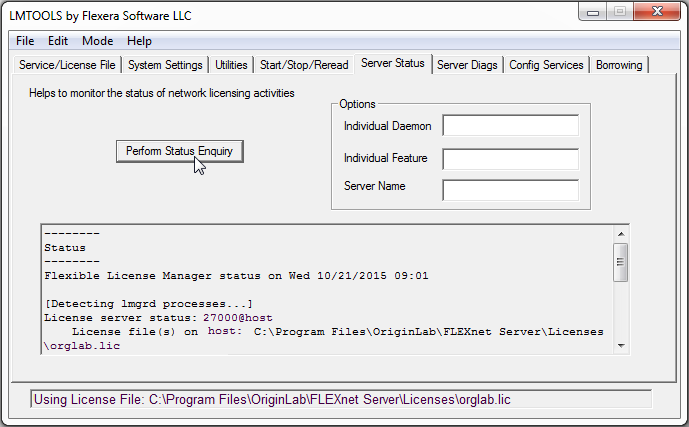

WindowsのFLEXnetサーバ設定方法
Concurrent-Windows
このページは主に初めて新規にFLEXnetサーバーをインストールして設定するユーザー向けです。 /Video_Image_2016.png) Setting up your Concurrent Network Package動画もご覧ください。
Setting up your Concurrent Network Package動画もご覧ください。
FLEXnetサーバー用のコンピュータの選択
動作環境
- 頻繁な再起動を必要としない安定したマシン。サーバーかワークステーションのどちらかを推奨。
- OSは、Windows Server 2022, 2019, 2016, 2012, 2008, Windows 11, 10, 8/8.1, 7, Vista (32bit、64bitの両方)に対応しています。
- Microsoft Visual C ++ 2015 Redistributable Package をインストールする必要があります。
- 低ネットワークトラフィック
- RAM容量が64MB以上
- すべてのOriginコンピュータが接続可能。FLEXnetライセンスサーバとクライアントが TCP/IPプロトコルで通信可能。
FLEXnetサーバーのインストール
/Alert_icon.png) | - ライセンスの問題やセキュリティリスクを回避するために、FLEXnetサーバーを常に最新バージョンに更新することをお勧めします。現在のバージョンは、11.19.4.1です。
- Microsoft Visual C ++ 2015 Redistributable Package をインストールする必要があります。インストールされていない場合は、はじめにダウンロードとインストールを行ってください。
|
新しいマシンでの設定
新しいマシンにFLEXnetサーバをインストールする場合は、シンプルにFLEXlmServerSetup exe をダウンロードしてインストールを実行します。または、OriginのDVDがある場合はそれを使用してインストールできます。C:\Program Files\ またはデスクトップにはインストールしないでください。
既存のFlexLMライセンスサーバの更新
FLEXnetサーバを最新バージョン（11.19.4.1）にアップグレードするには、インストールされている古いFLEXnetサーバをアンインストールしてから新しいバージョンをインストールすることをお勧めします。Program Filesフォルダとデスクトップへのインストールは推奨しません。
古いOriginLab FLEXnetサーバの削除方法
- 古いFLEXnetサーバのフォルダ郡を開き、ライセンスファイルを探します。新しいサーバでライセンスファイルを使いますので、このバックアップを取っておきます。
- LMTOOLS.exeを実行し、Start/Stop/Reread タブに移動します。Force Server Shutdown のチェックボックスにチェックを入れ、Stop Serverのボタンをクリックします。
- サーバが停止するまで待ちます。サーバステータスでシャットダウンしているかを確認出来ます。
- 次に、Config Services タブに移動し、設定されているOriginLab License Serviceを選択して、Remove Serviceをクリックします。LMTOOLS.exe を閉じます。
- Windows のコントロールパネルに移動し、OriginLab FLEXlmサーバをアンインストールします。表示されるプログラム名はLicense Server for OriginLabです。アンインストールを実行します。古いOriginLab FLEXnet server ファイルはアンインストールされます。
- もし古いフォルダが残っていましたら削除します。ライセンスファイルやログファイルも含まれています。
Note：
OriginLabのwebページからFLEXnetサーバーコンピューター用のライセンスファイルを取得
FLEXnetサーバのホスト名とホストIDを確認
- FLEXnetサーバーをインストールした場所に移動します。Toolsフォルダ内にあるLMTools.exeを実行します。
- System SettingsタブでComputer/HostnameとEthernet Addressを確認し、メモしておきます。
- またはコマンドプロンプトを開き、次のコマンドを入力します：
ipconfig /all
コマンドプロンプトウィンドウでは、これらの2つの数量がホスト名と物理アドレスとして表示されます。
/Comand.jpg)
ライセンスファイルを取得
- Originlab.comを開いて、ログインしてください。
- ログイン後に表示されるページで、登録済みのOrigin製品を表示のリンクをクリックします。
- お持ちのアカウントに対してすでにシリアル番号の登録がある場合、シリアル番号の一覧表に表示されます。
- 今回のシリアル番号とバージョンに対して今までライセンスファイルを取得したことがなければ、新しいシリアル番号を登録するボタンをクリックしてください。
- 以前にも同じシリアル番号・バージョンに対してライセンスを取得したことがあれば、シリアル番号の横にあるチェックボックスにチェックを付け、表の下にあるFLEXnetライセンスを取得ボタンをクリックしてください（FLEXnetを別のマシンに移行中で、システム移行のリクエストを送信済みの場合等）。
- 『Originを登録し、また、コンピュータに入れるべきライセンスファイルを取得したい』ラジオボタンを選び、「次に進む」ボタンを押します。
- シリアル番号、バージョンなどを入力して登録をクリックします。
- その後、FLEXnet serverのComputer/Hostname（コマンドプロンプトではホスト名）とホストID（これはLMTOOLSに表示されるEthernet Addressです。あるいは、コマンドプロンプトに表示される物理アドレスです。ダッシュ("-")は除きます）。
- 『送信』ボタンをクリックし、ライセンスファイルを生成します。
- 処理が成功すると、ライセンステキストが表示されます。ライセンステキストをコピーして、メモ帳等のテキストエディタに貼り付けます。
- テキストエディタでファイル｜名前を付けて保存を選択します。ファイルの種類ですべてのファイル(*.*)を選択します。FLEXnetサーバーの \Licenses\ フォルダにorglab.licという名前で保存します。これは推奨の保存場所です。ですが、他の好きな場所に保存することができます。Licenses\ フォルダに移動し、保存したファイルがorglab.lic.txt.ではなくorglab.licであることを確認します。
FLEXnetサービスの設定と起動
- FLEXnetサーバーの\Tools\フォルダからLMTOOLS.exeを実行します。Windows Server 2012, 2008, Windows Vista, Windows7 Windows8では、「LMTools.exe」で右クリックして、「管理者として実行」を選択して開きます。
- Service/License FileタブでConfiguration Using Servicesを選択します。
- Config Servicesタブで「OriginLab」か「自分で選んだ名前」をService Nameテキストボックスに入力します。
- Path to the lmgrd.exe fileフィールドで、ブラウズボタンをクリックして、FLEXnetサーバー\Servers\フォルダをブラウズします。開いたダイアログでlmgrd.exeファイルを選択します。
- Path to the license fileフィールドで、ブラウズボタンをクリックして、FLEXnetサーバー\Licenses\フォルダをブラウズします。開いたダイアログでorglab.licファイルを選択して、開くボタンをクリックします。
- デバッグログファイルはまだありません。このテキストボックスに入れたテキストに基づいてサービスが作成します。\ProgramData\FLEXlm\lmgrd\ より下のパスは、テキストボックスに既に入力されています。権限の問題を回避するために、このパスを受け入れることをお勧めします。
- Use Servicesチェックボックスにチェックを入れます。
- サーバコンピュータが起動したときに、自動的にFLEXlmライセンスサービスを実行させたい場合は、Start Server at Power Upにチェックをつけます。
- Save Serviceをクリックします。
/Config_services.png)
- 「Start/Stop/Reread」タブでForce Server Shutdownチェックボックスを選択します。
- Start Serverボタンをクリックします。"Server Start Successful"メッセージが、LMTOOLSのステータスバーに表示されます。
/Start_stop_reread.png)
- Server Statusタブで、Perform Status Enquiryボタンをクリックします。ステータスウィンドウは関連する機能利用の情報を報告します。

- FLEXnetライセンスサーバーがOriginソフトウェアと通信できるよう、ファイアウォールでポートを開けることができます。
詳細な手順については、こちらを参照してください。
関連情報：
- 自身のサーバーとクライアント間のファイアウォール通過を許可して、OriginのFLEXnetサービスにアクセスする方法
- 特定のユーザや部署用に、FLEXnetサービスにアクセス制限したり、ライセンスを保管したい場合は、オプションファイルを作成できます。
- Linux用FLEXnet サーバーの設定